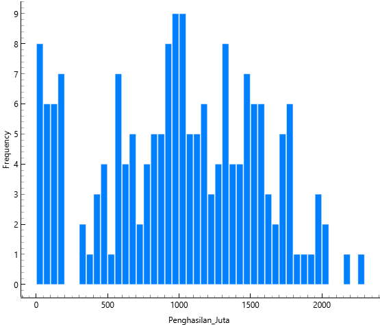
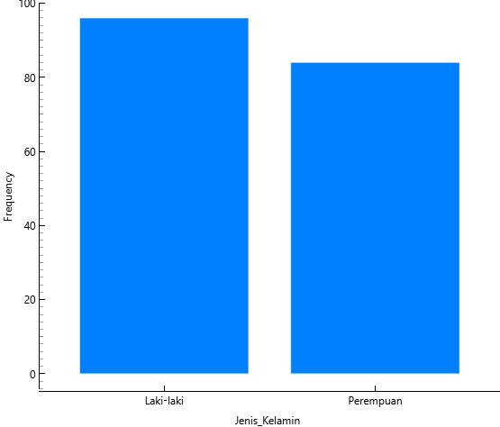
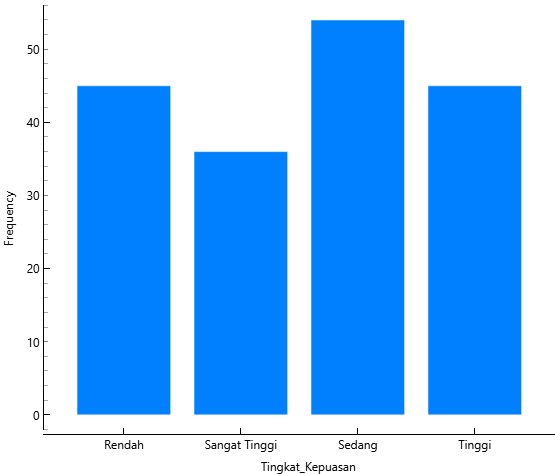
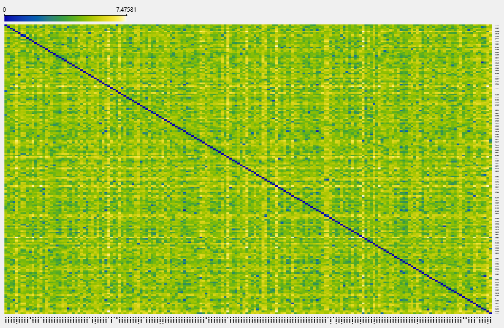
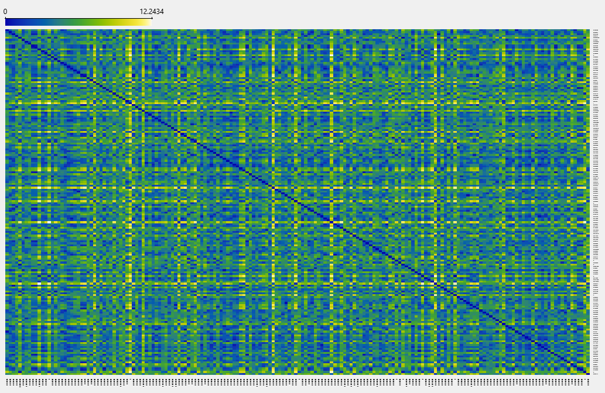
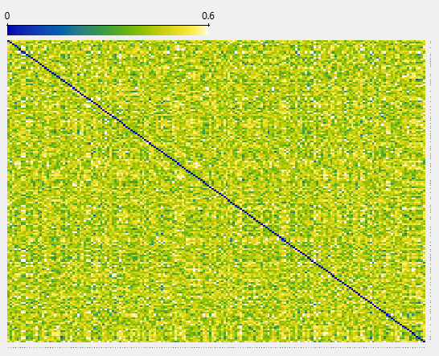

Tugas 2#
Dataset yang digunakan merupakan data pelanggan
dataset_pelanggan.csv
Ringkasan Dataset#
Jumlah observasi: 180 pelanggan
Jumlah variabel: 13 kolom
Missing value: Tidak ada
Jenis data: Numerik, Nominal, Ordinal, dan Biner (data campuran)
Dataset ini termasuk dalam kategori mixed data, karena mengandung kombinasi variabel numerik (misalnya umur dan penghasilan), variabel nominal (kota dan kategori favorit), variabel ordinal (pendidikan dan tingkat kepuasan), serta variabel biner (status member dan penggunaan promo).
Struktur Data#
Kolom |
Tipe Data |
Jenis Variabel |
Keterangan |
|---|---|---|---|
ID_Pelanggan |
int |
Identifier |
Nomor unik pelanggan |
Umur |
int |
Numerik |
Rentang 17–55 tahun |
Penghasilan_Juta |
float |
Numerik |
Penghasilan bulanan (dalam satuan numerik tertentu) |
Total_Belanja_Bulanan_Juta |
float |
Numerik |
Total belanja per bulan (dalam stuan numerik tertentu) |
Transaksi_Per_Bulan |
int |
Numerik |
Jumlah transaksi per bulan |
Jenis_Kelamin |
object |
Nominal |
Laki-laki / Perempuan |
Kota |
object |
Nominal |
Kota domisili pelanggan |
Kategori_Favorit |
object |
Nominal |
Kategori belanja favorit |
Pendidikan |
object |
Ordinal |
SMA/SMK < D3 < S1 < S2 < S3 |
Frekuensi_Belanja |
object |
Ordinal |
Jarang < Kadang < Sering |
Tingkat_Kepuasan |
object |
Ordinal |
Rendah < Sedang < Tinggi < Sangat Tinggi |
Status_Member |
int |
Biner |
0 = Non-member, 1 = Member |
Menggunakan_Promo |
int |
Biner |
0 = Tidak, 1 = Ya |
Statistik Deskriptif (Numerik)#
Variabel |
Mean |
Min |
Max |
Std Dev |
|---|---|---|---|---|
Umur |
37.84 |
17 |
55 |
10.83 |
Penghasilan_Juta |
11.47 |
3.00 |
22.91 |
4.68 |
Total_Belanja_Bulanan_Juta |
0.47 |
0.00 |
1.56 |
0.36 |
Transaksi_Per_Bulan |
2.54 |
0 |
8 |
1.76 |
Kolom ID_Pelanggan tidak dianalisis karena hanya berfungsi sebagai identifier.
Interpretasi#
Rata-rata umur pelanggan adalah sekitar 37–38 tahun.
Rata-rata penghasilan pelanggan sekitar 11 juta rupiah per bulan.
Pelanggan melakukan sekitar 2–3 transaksi per bulan.
Standar deviasi menunjukkan adanya variasi karakteristik pelanggan yang cukup beragam.
Karakteristik Variabel Ordinal#
Pendidikanmemiliki 5 kategori: (SMA/SMK < D3 < S1 < S2 < S3)Frekuensi_Belanjamemiliki 3 kategori: (Jarang < Kadang < Sering)Tingkat_Kepuasanmemiliki 4 kategori: (Rendah < Sedang < Tinggi < Sangat Tinggi)Variabel berbentuk teks (kategori), sehingga perlu dilakukan encoding ordinal jika digunakan dalam perhitungan jarak atau modeling.
Kualitas Data#
Tidak ada missing value
Semua ID_Pelanggan unik (1–180)
Tidak ada nilai di luar rentang logis
Dataset relatif bersih dan siap dianalisis
Dataset termasuk data campuran (numerik, nominal, ordinal, dan biner)
Preprocessing#
Hapus kolom
ID_Pelanggan(karena hanya identifier)Encoding:
One-Hot Encoding:
Jenis_Kelamin,Kota,Kategori_FavoritOrdinal Encoding:
Pendidikan,Frekuensi_Belanja,Tingkat_KepuasanVariabel biner (
Status_Member,Menggunakan_Promo) tetap dalam bentuk 0 dan 1
Scaling numerik:
Normalisasi ke interval [0,1] jika menggunakan metode berbasis jarak
Gunakan metode jarak yang sesuai untuk data campuran:
Gower Distance (ideal)
Jika tidak tersedia, gunakan Euclidean setelah encoding dan normalisasi
Kesimpulan Awal#
Dataset terdiri dari 180 pelanggan dengan karakteristik demografis dan perilaku belanja.
Data sudah bersih dan dapat langsung digunakan untuk:
Analisis deskriptif
Pengukuran jarak antar pelanggan
Clustering / segmentasi pelanggan
Visualisasi berbasis jarak (Distance Map, MDS)
Visualisasi Data Pelanggan#
1. Distribusi Penghasilan#
{kind=link}

2. Distribusi Jenis Kelamin#
{kind=link}

3. Distribusi Kepuasan Pelanggan#
{kind=link}

Mengukur Jarak Dataset Pelanggan#
Rumus Euclidean Distance#
Untuk dua pelanggan A dan B:
[ d(A,B) = \sqrt{(x_A - x_B)^2} ]
Karena hanya menggunakan satu variabel (Umur), maka:
[ d = |Umur_A - Umur_B| ]
Euclidean Distance (Variabel: Usia)#
{kind=link}

Interpretasi#
Nilai jarak kecil → perbedaan usia antar pelanggan kecil (usia hampir sama).
Nilai jarak besar → perbedaan usia antar pelanggan cukup jauh.
Nilai 0 pada diagonal → menunjukkan jarak pelanggan terhadap dirinya sendiri.
Semakin besar nilai jarak → semakin besar selisih usia antar pelanggan.
Karakteristik Euclidean Distance (Variabel Umur)#
Cocok untuk data numerik kontinu seperti usia.
Dalam satu variabel, Euclidean Distance sama dengan nilai absolut selisih usia.
Sensitif terhadap perbedaan besar (misalnya usia 20 dan 50 akan menghasilkan jarak tinggi).
Mengukur perbedaan secara langsung berdasarkan selisih numerik.
Rumus Manhattan Distance#
Manhattan Distance mengukur jarak sebagai jumlah selisih absolut antar variabel.
[ d(A,B) = |x_1 - y_1| + |x_2 - y_2| + \dots + |x_n - y_n| ]
Karena hanya menggunakan satu variabel (Penghasilan_Juta), maka:
[ d = |Penghasilan_A - Penghasilan_B| ]
Manhattan Distance (Variabel: Penghasilan_Juta)#
{kind=link}

Interpretasi#
Nilai jarak kecil → pelanggan memiliki tingkat penghasilan yang hampir sama.
Nilai jarak besar → terdapat perbedaan ekonomi yang signifikan antar pelanggan.
Nilai 0 pada diagonal → menunjukkan jarak pelanggan terhadap dirinya sendiri.
Semakin terang warna pada Distance Map → semakin besar perbedaan penghasilan antar pelanggan.
Karakteristik Manhattan Distance#
Cocok untuk data numerik seperti penghasilan.
Mengukur jarak sebagai selisih absolut.
Lebih stabil terhadap outlier dibandingkan Euclidean.
Mudah diinterpretasikan karena langsung merepresentasikan selisih nilai.
Rumus Hamming Distance#
Hamming Distance mengukur perbedaan antar atribut kategorikal atau biner.
[ d = \begin{cases} 0, & \text{jika nilai sama} \ 1, & \text{jika nilai berbeda} \end{cases} ]
Karena menggunakan variabel Status_Member, maka:
d = 0 → kedua pelanggan memiliki status keanggotaan yang sama
d = 1 → status keanggotaan berbeda
{kind=link}

Interpretasi#
Nilai 0 menunjukkan pelanggan memiliki status keanggotaan yang sama.
Nilai 1 menunjukkan perbedaan status member.
Hamming Distance tidak mempertimbangkan besar kecil nilai, hanya kesamaan atau perbedaan.
Karakteristik Hamming Distance#
Cocok untuk data biner atau kategorikal.
Tidak cocok untuk data numerik kontinu.
Menghitung jumlah atribut yang berbeda.
Tidak mempertimbangkan magnitude perbedaan.
Perbandingan Metode Distance#
Aspek |
Euclidean Distance |
Manhattan Distance |
Hamming Distance |
|---|---|---|---|
Variabel yang Digunakan |
Umur |
Penghasilan_Juta |
Status_Member |
Jenis Data |
Numerik kontinu |
Numerik kontinu |
Biner / Kategorikal |
Konsep Dasar |
Mengukur jarak geometris antar nilai |
Mengukur total selisih absolut |
Mengukur kesamaan atau perbedaan nilai |
Interpretasi Nilai Kecil |
Usia hampir sama |
Penghasilan hampir sama |
Status member sama |
Interpretasi Nilai Besar |
Perbedaan usia jauh |
Perbedaan penghasilan besar |
Status berbeda |
Sensitivitas terhadap Outlier |
Tinggi |
Lebih stabil dari Euclidean |
Tidak terpengaruh besar nilai |
Cocok Untuk |
Data numerik berskala |
Data numerik multidimensi |
Data biner/kategorikal |
Kelebihan |
Representatif untuk jarak numerik |
Lebih robust terhadap nilai ekstrem |
Sederhana dan mudah dipahami |
Keterbatasan |
Sensitif terhadap skala data |
Tidak mempertimbangkan arah perubahan |
Tidak cocok untuk numerik kontinu |
Kesimpulan#
Euclidean Distance cocok digunakan untuk variabel numerik kontinu seperti Umur, karena mampu mengukur perbedaan nilai secara geometris berdasarkan selisih numerik.
Manhattan Distance sesuai untuk variabel numerik seperti Penghasilan_Juta, karena mengukur total selisih absolut dan relatif lebih stabil terhadap perbedaan nilai ekstrem.
Hamming Distance tepat digunakan untuk variabel biner seperti Status_Member, karena hanya mengukur kesamaan atau perbedaan kategori tanpa mempertimbangkan besar kecil nilai.
Pada dataset campuran (numerik dan kategorikal), pemilihan metode jarak harus disesuaikan dengan tipe variabel yang dianalisis agar hasil pengukuran representatif.
Metode yang ideal untuk data campuran adalah Gower Distance.
Alternatifnya, dilakukan normalisasi dan encoding sebelum menggunakan metode berbasis jarak seperti Euclidean atau Manhattan.